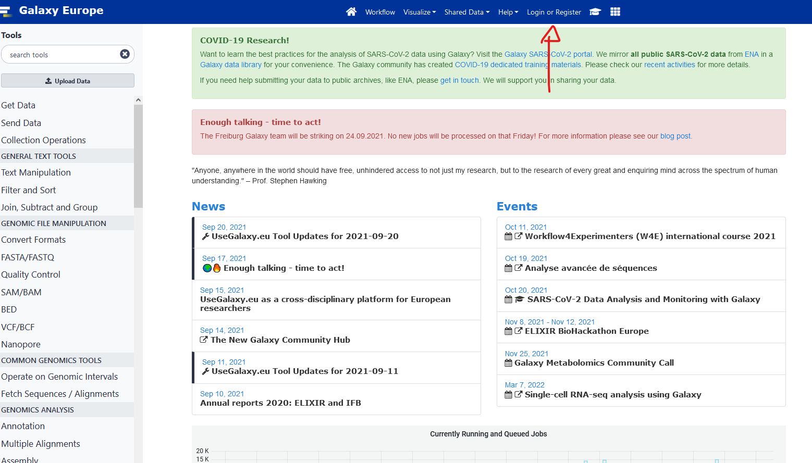
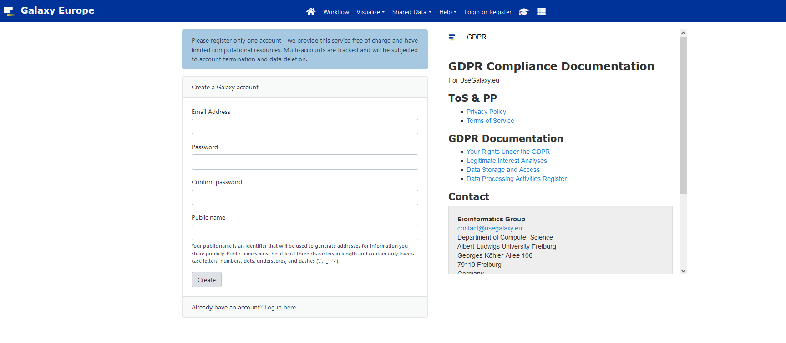
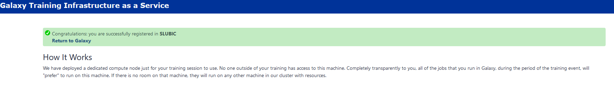

Genome Annotation
Schedule:
Day 1
- Morning:
- Afternoon:
- Prokaryotic annotation practice here
Day 2
- Morning:
- Afternoon:
- Eukaryotic annotation practice here
Day 3
- Morning:
- All-round genome annotation presentation
- Beginning Project
- Afternoon:
- Project work
Day 4
- Morning:
- Project work
- Afternoon:
- Presentation of project
Galaxy
Galaxy set up
- Register to usegalaxy.eu.



-
Click the verification link you will receive by email.
-
Go to this link to join our training session. It should say you successfully registered in HEHANNOT

Galaxy introduction
Slides here
We will follow this tutorial
Bioconda and Conda installation
We will follow the installation recommended by bioconda directly
Installation of bioconda
- Install conda
Bioconda requires the conda package manager to be installed. If you have an Anaconda Python installation, you already have it. Otherwise, the best way to install it is with the Miniconda package. The Python 3 version is recommended.
On MacOS, run:
curl -O https://repo.anaconda.com/miniconda/Miniconda3-latest-MacOSX-x86_64.sh
sh Miniconda3-latest-MacOSX-x86_64.sh
On Linux, run:
curl -O https://repo.anaconda.com/miniconda/Miniconda3-latest-Linux-x86_64.sh
sh Miniconda3-latest-Linux-x86_64.sh
Follow the instructions in the installer. If you encounter problems, refer to the Miniconda documentation.
- Set up channels
After installing conda you will need to add the bioconda channel as well as the other channels bioconda depends on. It is important to add them in this order so that the priority is set correctly (that is, conda-forge is highest priority).
The conda-forge channel contains many general-purpose packages not already found in the defaults channel.
conda config --add channels defaults
conda config --add channels bioconda
conda config --add channels conda-forge
- Install packages
Browse the packages to see what’s available.
Bioconda is now enabled, so any packages on the bioconda channel can be installed into the current conda environment:
conda install bwa
Or a new environment can be created:
conda create -n aligners bwa bowtie hisat star
!!!! if you are on ubuntu in WSL you might get an HTTP error, to solve it a simple reboot of your computer is enough.!!!!
Tutorial, guides, and CheatSheet
Here is a collection of materials to train and improve your conda use. All have their strength and weaknesses, the cheatsheet is your best friend when working.
Grade breakdown
- 40% Active participation
- 20% Project report
- 40% Project presentation and discussion